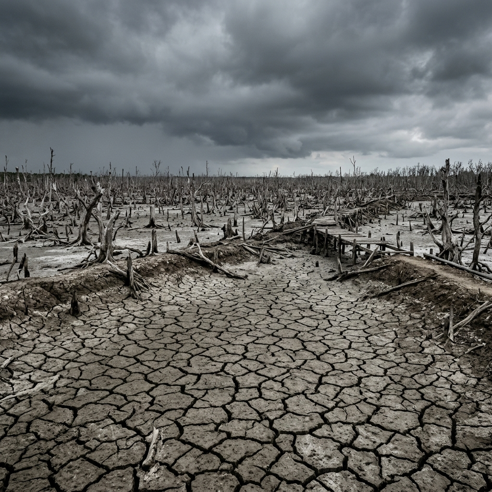

Bản trực quan hóa Đề án góp phần bảo tồn và phục hồi hệ sinh thái rừng ngập mặn.
Tổng quan về cơ cấu tổ chức, đơn vị phối hợp, kinh phí và đối tượng tham gia Đề án.
Góp phần bảo tồn và phục hồi Hệ sinh thái Rừng ngập mặn tại xã Núi Thành, giai đoạn 2026 - 2030
Thời gian: 4 năm (2026 - 2030)
Địa điểm: Bãi bồi cửa sông An Hòa, Cửa Lở, xã Núi Thành, Quảng Nam.
Dự toán: Trên 100.000.000 đ / năm
Nguồn vốn: Xã hội hóa (doanh nghiệp tài trợ, đóng góp cộng đồng và ngày công tình nguyện).
Phạm vi: Vùng ngập mặn suy thoái, bãi bồi ven sông.
Đối tượng: Cán bộ, người dân, đoàn viên thanh niên và học sinh địa phương.
Phân tích những tổn thương nghiêm trọng do con người và biến đổi khí hậu đang đe dọa trực tiếp cánh rừng ngập mặn Núi Thành.
Nằm ở hạ lưu đầm phá An Hòa, Cửa Lở, rừng ngập mặn Núi Thành từng là cánh rừng phong phú đa dạng. Tuy nhiên, phong trào nuôi tôm thâm canh tự phát sau năm 1990 đã khiến người dân ồ ạt phá rừng đước làm ao đầm.
Hậu quả để lại vô cùng nặng nề: ao tôm ô nhiễm nguồn nước do chất thải chăn nuôi, năng suất tôm giảm mạnh, rễ cây bị tước bỏ dẫn đến xói lở đất đai nghiêm trọng trước sóng bão và triều cường.
Dự báo giai đoạn 2025 - 2029, nhiệt độ toàn cầu tăng 1.2°C - 1.9°C. Mực nước biển dâng khiến rừng bị ngập sâu và lâu hơn trước, đẩy nhanh tiến trình xói lở đường bờ ven biển.

Đầm tôm hoang hóa & Rừng chếtNhấn giữ thanh trượt và kéo sang hai bên để so sánh hiện trạng
Định hướng cốt lõi và các chỉ số hành động cụ thể để tái thiết hệ sinh thái rừng ngập mặn.
Thay đổi từ "trồng rừng phong trào" sang "tái thiết hệ sinh thái thực thụ". Đồng hành trong suốt quá trình nuôi dưỡng cây giống thích nghi, bảo vệ vùng trồng tránh ô nhiễm rác thải.
Không làm thay mà làm cùng nhân dân địa phương. Gắn kết trách nhiệm giữa chính quyền, doanh nghiệp, các hội đoàn thể và người dân hưởng lợi trực tiếp.
Trọng tâm "Trồng cây - Trồng người". Biến rừng đước thành hiện trường trải nghiệm sống động để nuôi dưỡng tình yêu thiên nhiên và ý thức bảo vệ của thế hệ trẻ.
Cam kết "đúng người - đúng việc". Cơ chế giám sát tài chính đa chiều chặt chẽ giữa nhà tài trợ, chính quyền xã và đơn vị thực thi CLB Đất Quảng Yêu Thương.
Mô hình "Lục giác liên kết" phối hợp đa phương tạo ra cơ chế vận hành chuyên nghiệp, gắn kết chặt chẽ vai trò của 6 bên tham gia.
Thiết lập nhóm điều phối trực tuyến liên lạc thời gian thực bao gồm đại diện nòng cốt của cả 6 bên để cập nhật tình hình tức thời tại thực địa.
Họp triển khai trước khi xuống giống; Họp sơ kết sau 6 tháng để đánh giá tỷ lệ cây sống và giải ngân tài chính; Họp tổng kết cuối mỗi năm hoạt động.
CLB Đất Quảng Yêu Thương chịu trách nhiệm chốt dự toán và quyết toán. Mọi khoản chi phải có hóa đơn, chứng từ và xác nhận giám sát chéo của UBND xã.
Khi thiên tai hoặc sự cố môi trường làm chết cây non, các bên lập tức họp để lên phương án khơi thông dòng chảy, kè chắn hoặc trồng dặm từ nguồn quỹ dự phòng.
Phân tích hiệu quả bền vững về sinh thái, lợi ích xã hội lâu dài và phương án cân đối tài chính cho các hoạt động trồng rừng.
Khái quát tiến trình các hoạt động và các giải pháp đề xuất để tối ưu hóa hiệu quả thực thi của dự án.
Tập trung khảo sát thực địa bãi bồi, truyền thông nâng cao nhận thức, lập dự thảo đề án chính thức và vận động nguồn vốn tài trợ.
Tổ chức các ngày hội trồng rừng, dọn dẹp rác thải nhựa định kỳ, vận hành vườn ươm, kiểm tra định vị GPS và báo cáo tỷ lệ cây sinh trưởng chéo.
Tra cứu các văn bản quy phạm lâm nghiệp cấp Trung ương và địa phương, các phụ lục đi kèm cùng các bài báo thực tế phản ánh tình hình rừng tại địa phương.
Các phóng sự, tin tức điều tra trên các tờ báo lớn của trung ương và địa phương về tình trạng rừng ngập mặn Tam Giang - Núi Thành bị suy thoái và các đợt phục hồi rừng: